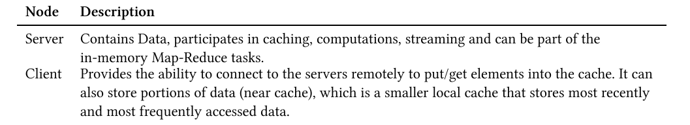
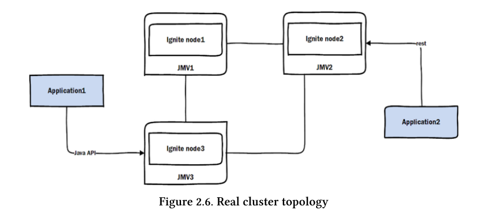
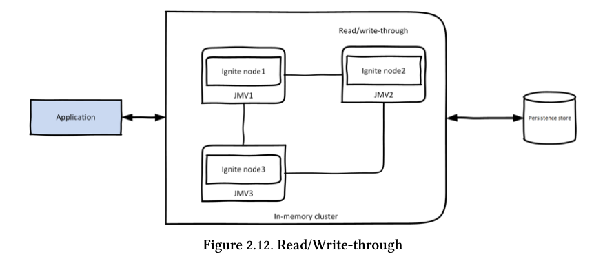
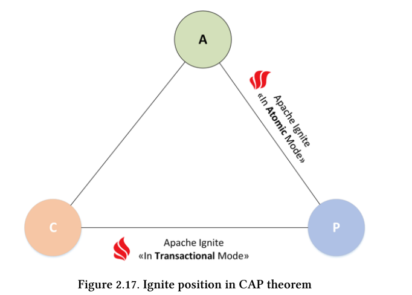

Структура ignite

- все ноды равнозначны, нет никаких мастер-нод 
Топология кластера
-
Клиентские ноды могут выполнять рассчеты, более того можно создать клстер в котором серверные ноды будут только хранить данные, а клинентские ноды их обрабатывать.

-
Ноды ignite могут быть
-
embedded

-
in separate jvm

-
Топология кеша
-
Типы топологий
- Partitioned (топология по умолчанию) - данные кеша разбиты с избыточностью по нодам кластера.

- Replicated - все данные хранятся на всех нодах - очень быстрый доступ к данным. Недостаток - каждая нова порция данных должна быть скопирована на все ноды - медленные апдейты. Подходит для быстрого доступа к небольшим редко изменяемым данным.

- Local - очень быстрый и хорошо подходит для read\wrtite-through кеша.
Стратегии использования кеша
- cache-aside - приложение само пишет данные в БД и обновлять кеш. Например если в кеше нет данных то они читаются приложением и записываются в кеш. При обновлении данных в БД приложение само обновляет кеш.
- Read-through and Write-through - приложение пишет и читает данные только из кеша. Кеш сам взаимодействует с БД. 
- Write behind - операции записи аггрегируются и асинхронно отправляются в дисковое хранилище.

- Partitioned (топология по умолчанию) - данные кеша разбиты с избыточностью по нодам кластера.
Модель данных
- Ignite использует хранилище типа key-value.

CAP
1. Consistency - все ноды имеют одни и теже данные.
2. Availability - клиент может читать и писать
3. Partitioning tolerance - система поддерживает партицирование, при выходе одной ноды з строя
система все еще работоспособна
CA - базы данных, AP - cassandra и тп.
- Ignite modes:
- Transactional - можно группировать коммманды (DML) в транзакцию и коммтить ее, будут использоваться пессиместические блокировки
- Atomic - каждая комманда (DML) может выполниться успешно либо не успешно, блокировок нет. 
Cluster groups
- В ignite все ноды равноценны но можно создать логическую группу. Например сгруппируем ноды обслуживающие myCache:
IgniteCluster cluster = ignite.cluster();
// All the data nodes responsible for caching data for "myCache".
ClusterGroup dataGroup = cluster.forDataNodes("myCache");
- Ноды в Ignite можно также сгруппировать по аттрибутам - master,worker,data nodes
//запуск мастер-ноды
IgniteConfiguration cfg = new IgniteConfiguration();
Map<String, String> attrs = Collections.singletonMap("ROLE", "master");
cfg.setUserAttributes(attrs);
// Start Ignite node.
Ignite ignite = Ignition.start(cfg);
//далее можно получить все мастер ноды
IgniteCluster cluster = ignite.cluster();
ClusterGroup workerGroup = cluster.forAttribute("ROLE", "master");
Collection<GridNode> workerNodes = workerGroup.nodes();
Выполнение SQL-запросов
- В партицированном кластере запросы выполняются в виде map-reduce работ
- В реплицированном кластере запросы выполняются используя H2 бд
Асинхронные методы
- Асинхронне методы возвращают IgniteFuture
который имеет метод get - это тн promise - обещание вернуть результат. Метод IgniteFuture.listen(FunctionalInterface) неблокирующий и выполняется по готовности. Примеры кода в project-installation модуле.
Resilence
- Термин означает скорейшее восстановление после сбоя, например нода будет автоподключаться к кластеру в случае сбоя.
API